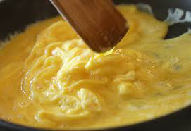
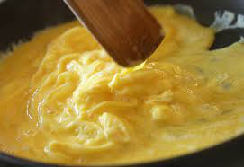

How many recipes have you made from this page?
Peanut Butter and Jelly Sandwich
Origin: American
Source: Alex Likens
Category: Main Dish

This is a dish that is great at all times of year. Its mix of savory flavors with sweet jelly make sit a favorite dish for many people. This dish is great for any situation whether you are on the go, in a rush, or just looking for a tasty meal in your home.
Recipe Ingredients
- bread
- peanut butter
- jelly
Recipe Steps
- Take two piece of bread and place them on a plate
- Put a thick layer of jelly on one piece of the bread
- Put a thick layer of peanut butter on the other piece of the bread
- Put the two pieces of bread together so they face each other
Additional Food images


Double Chocolate Cookies
Origin: Michigan
Source: Family Recipe
Category: Dessert

My daughter learned to make these cookies at a baking camp at Zingermanns and has tweaked the recipe to fit the taste buds of her siblings. They are extremely sugary so the salt helps to balance it. Note, these cookies are best eaten very quickly.
Recipe Ingredients
- unsalted butter
- granulated sugar
- packed light or dark brown sugar
- large egg
- pure vanilla extract
- semi-sweet chocolate chunks (melted)
- all-purpose flour
- natural unsweetened cocoa powder
- baking soda
- salt
- semi-sweet chocolate chunks
Recipe Steps
- In a mixing bowl cream together the butter, granulated sugar, and brown sugar
- Add the egg and vanilla extract and beat well
- Add the melted chocolate
- In a separate bowl combine the flour, baking soda, cocoa powder and salt
- Combine the wet and dry ingredients
- Add the unmelted chocolate chunks.
- Form 15 cookies and place on a baking sheet.
- Cook for 12 to 13 minutes at 350 degrees.
Additional Food images


Tomato and Eggs
Origin: China
Source: Own Recipe
Category: Main Dish

Tomato and eggs is a hot dish which originated from China. It is a simple and fast dish to make, but it has good nutritional value. It is a very satisfying food to eat and popularly served with rice and topped with green onions.
Recipe Ingredients
- tomatoes
- eggs
- salt
- sugar
- cooking oil
Recipe Steps
- Crack eggs into a bowl and mix until scrambled
- Cut tomatoes into pieces around the size of your thumb
- Oil a hot pan and cook the eggs until satisfied then remove the eggs
- Re-oil the pan and cook the tomatoes until they loosen
- Combine eggs and tomatoes and season with salt and sugar
Additional Food images

 

Tomato Basil Pasta
Origin: Italian
Source: https://www.bonappetit.com/recipe/pasta-with-no-cook-tomato-sauce
Category: Main Dish

This recipe is a fantastic way to step up your pasta game without taking too much more of your time. It tastes way better than basic pasta with jarred sauce! I originally found this when my sister made it, and got the recipe off of Bon Appetit’s website. PS avoid using the shaker parmesan – I used that the first time I made this and it drew down the quality of the dish.
Recipe Ingredients
- pasta
- tomatoes
- basil
- red wine vinegar
- extra virgin olive oil
- crushed red pepper
- finely grated block of parmesan
Recipe Steps
- cut tomatoes along equator
- squeeze juice and seeds out of tomatoes and discard
- cut juiced tomatoes into small-ish pieces
- smush down with large spoon to release some leftover juices
- add in vinegar, olive oil, crushed red pepper and half of parmesan
- let marinate for half an hour
- add basil
- cook pasta
- toss marinade with cooked pasta and serve topped with remaining parmesan
Additional Food images


Mapo Tofu
Origin: China
Source: Own Recipe
Category: Main Dish

Need something smooth and spicy? Mapo Tofu is a simple tofu dish from Sichuan China. It's great over rice and easy to prep/save for college students! This recipe is for people who want to try authentic Chinese food but do not have Sichuan spices to use.
Recipe Ingredients
- 1 pack silken tofu
- 2 green onions, thinly sliced
- 1/2 lb ground pork
- 1 pack mapo tofu sauce (store bought)
- 3 cloves minced garlic
- soy sauce to taste
- 2 tbsp cooking oil
Recipe Steps
- Brown pork in wok with oil for 4-5 minutes
- Add sauce and garlic, stir fry for 2 minutes
- Add tofu and mix lightly as to not break up the tofu too much, until heated through
- Add soy sauce, green onion and dish up
Additional Food images